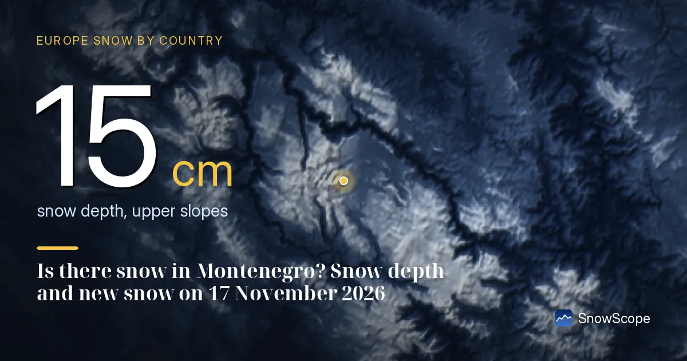
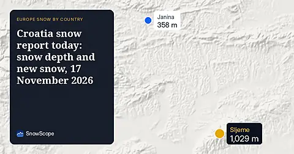
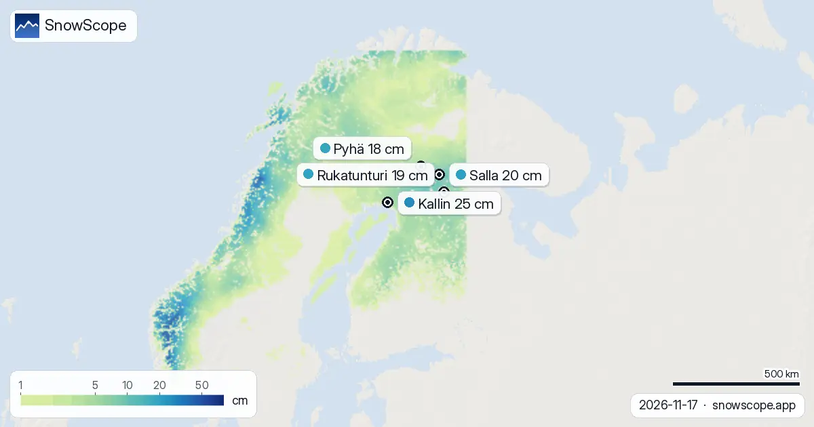
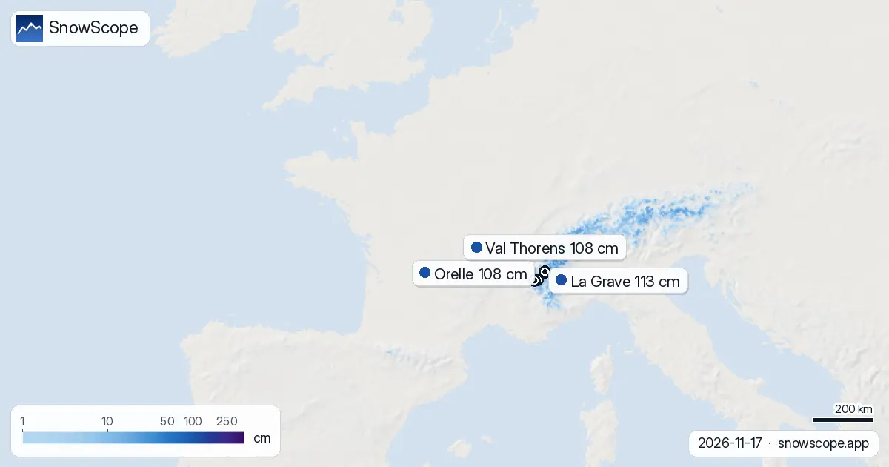
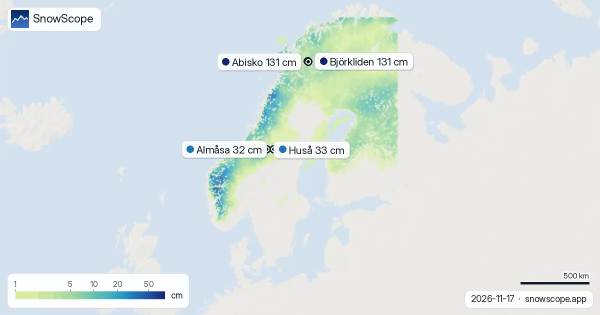
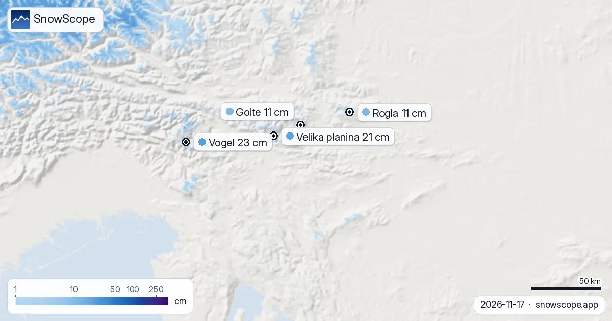
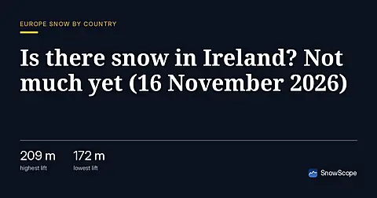
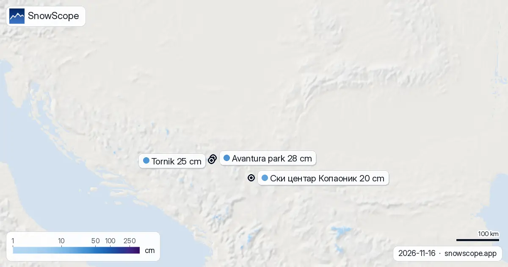
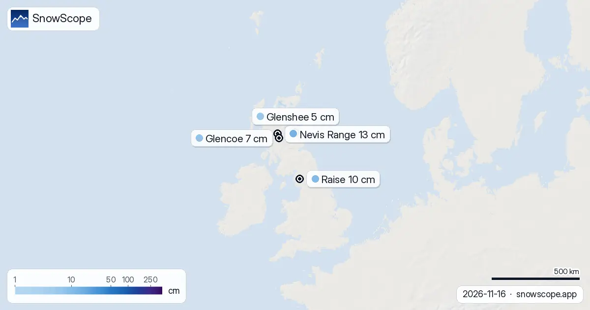

Snow reports · Europe snow by country
Europe snow by country: The white area in Montenegro stands at about 20 km² today, 60 km² lost since yesterday.
Snow by country today
The whitest countries today: Norway (89 %), Sweden (79 %) and Finland (59 %).
Most new snow in the week ahead: France (87 cm), Switzerland (85 cm) and Italy (58 cm).
| Country | White | Deepest resort | Next 7 days |
|---|---|---|---|
| Norway | 89 % | Riksgränsen · 171 cm | 39 cm |
| Sweden | 79 % | Björkliden · 131 cm | 17 cm |
| Finland | 59 % | Kallin · 25 cm | 15 cm |
| Switzerland | 41 % | Glacier 3000 · 46 cm | 85 cm |
| Austria | 30 % | Kühtai · 54 cm | 47 cm |
| UK | 22 % | Nevis Range · 15 cm | 11 cm |
| Italy | 13 % | La Thuile ski · 50 cm | 58 cm |
| France | 10 % | La Grave · 113 cm | 87 cm |
| Slovakia | 10 % | Ski centrum Dedinky · 42 cm | 12 cm |
| Poland | 6 % | Karpacz · 36 cm | 12 cm |
| Romania | 6 % | Borsec · 27 cm | 12 cm |
| Slovenia | 6 % | Vogel · 23 cm | 7 cm |
| Ukraine | 6 % | Драгобрат · 8 cm | 21 cm |
| Andorra | 2 % | Ordino-Arcalis · 3 cm | 7 cm |
| Germany | 2 % | Zugspitze · 54 cm | 31 cm |
| Bulgaria | 1 % | Bansko · 4 cm | 8 cm |
| Czechia | 1 % | Ramzová · 21 cm | 7 cm |
| Kosovo | 1 % | – | 11 cm |
| Albania | 0 % | – | 16 cm |
| Bosnia and Herzegovina | 0 % | – | 15 cm |
| Spain | 0 % | Aramón Cerler · 17 cm | 4 cm |
| Greece | 0 % | – | 2 cm |
| Croatia | 0 % | Sljeme · 1 cm | 9 cm |
| Hungary | 0 % | – | 1 cm |
| Ireland | 0 % | – | 0 cm |
| Montenegro | 0 % | Ski centar Savin kuk · 15 cm | 15 cm |
| North Macedonia | 0 % | – | 10 cm |
| Portugal | 0 % | – | 1 cm |
| Serbia | 0 % | Avantura park · 3 cm | 8 cm |
Is there snow in Montenegro? Snow depth and new snow on 17 November 2026

The white area in Montenegro stands at about 20 km² today, 60 km² lost since yesterday.
How much of the country is white
Below about 2,200 m the slopes are mostly green or brown. Seven days ago the figure was 280 km², 260 km² more than now.

Montenegro snow today, 17 November: snow cover, new snow, snow depth by height, the next days and the best resorts.

Serbia snow today, 17 November: snow cover, new snow, snow depth by height, the next days and the best resorts.

Croatia snow today, 17 November: snow cover, new snow, snow depth by height, the next days and the best resorts.

Bosnia and Herzegovina snow today, 17 November: snow cover, new snow, snow depth by height, the next days and the best resorts.

Albania snow today, 17 November: snow cover, new snow, snow depth by height, the next days and the best resorts.

North Macedonia snow today, 17 November: snow cover, new snow, snow depth by height, the next days and the best resorts.

Austria is behind: Kühtai has 20 cm, a normal 17 November has 33 cm. Snow cover, new snow, resorts and the days ahead in Austria on 17 November.

4 of 11 resorts in Bulgaria have snow on top: the list. Snow cover, new snow, resorts and the days ahead in Bulgaria on 17 November.

Finland or Sweden? Where the snow is better on 17 November. Snow cover, new snow, resorts and the days ahead in Finland on 17 November.

Where the snow fell in France: The Mont Blanc massif first, up to 47 cm. Snow cover, new snow, resorts and the days ahead in France on 17 November.

Mild day in Italy: the snow retreats to 2,000 m. Snow cover, new snow, resorts and the days ahead in Italy on 17 November.

One week, 67,960 km² more white ground in Norway. Snow cover, new snow, resorts and the days ahead in Norway on 17 November.

The snow is shrinking in Poland: 590 km² gone since last week. Snow cover, new snow, resorts and the days ahead in Poland on 17 November.

Mild day in Romania: the snow retreats to 1,700 m. Snow cover, new snow, resorts and the days ahead in Romania on 17 November.

At what height is there snow in Slovakia? From 1,200 m up. Snow cover, new snow, resorts and the days ahead in Slovakia on 17 November.

How many resorts in Sweden have snow? 59 of 75 on 17 November. Snow cover, new snow, resorts and the days ahead in Sweden on 17 November.

Switzerland: up to 85 cm of new snow on the way, most of it on Friday 20 November

One week, 6,810 km² more white ground in the UK. Snow cover, new snow, resorts and the days ahead in the UK on 17 November.

Mild day in Ukraine's Carpathians: the snow retreats to 1,400 m. Snow cover, new snow, resorts and the days ahead in Ukraine's Carpathians on 17 November.

Two-week snow outlook in Andorra: 13 cm and 21 cm. Snow cover, new snow, resorts and the days ahead in Andorra on 17 November.

How many resorts in Czechia have snow? 22 of 170 on 17 November. Snow cover, new snow, resorts and the days ahead in Czechia on 17 November.

Slovenia or Austria? Where the snow is better on 17 November. Snow cover, new snow, resorts and the days ahead in Slovenia on 17 November.

The snow is shrinking in Germany: 840 km² gone since last week. Snow cover, new snow, resorts and the days ahead in Germany on 17 November.

Kosovo snow today, 17 November: snow cover, new snow, snow depth by height, the next days and the best resorts.

Two-week snow outlook in Albania: 9 cm and 22 cm. Snow cover, new snow, resorts and the days ahead in Albania on 16 November.

Andorra vs France: 2 % white against 11 %. Snow cover, new snow, resorts and the days ahead in Andorra on 16 November.

How many resorts in Austria have snow? 215 of 277 on 16 November. Snow cover, new snow, resorts and the days ahead in Austria on 16 November.

Thaw in Bosnia and Herzegovina: 600 km² of snow cover gone in a day

Bulgaria vs Romania: 2 % white against 10 %. Snow cover, new snow, resorts and the days ahead in Bulgaria on 16 November.

Mild day in Croatia: the snow retreats to 1,500 m. Snow cover, new snow, resorts and the days ahead in Croatia on 16 November.

Mild day in Czechia: the snow retreats to 1,200 m. Snow cover, new snow, resorts and the days ahead in Czechia on 16 November.

One week, 138,530 km² more white ground in Finland. Snow cover, new snow, resorts and the days ahead in Finland on 16 November.

France or Switzerland? Where the snow is better on 16 November. Snow cover, new snow, resorts and the days ahead in France on 16 November.

Why Zugspitze is short of snow for 16 November: 12 cm instead of 19 cm. Snow cover, new snow, resorts and the days ahead in Germany on 16 November.

Greece snow today, 16 November: snow cover, new snow, snow depth by height, the next days and the best resorts.

Hungary snow today, 16 November: snow cover, new snow, snow depth by height, the next days and the best resorts.

Ireland snow today, 16 November: snow cover, new snow, snow depth by height, the next days and the best resorts.

Monterosa Ski is ahead of the season: 18 cm where 13 cm is usual. Snow cover, new snow, resorts and the days ahead in Italy on 16 November.

Kosovo's next two weeks: 7 cm first, then 18 cm. Snow cover, new snow, resorts and the days ahead in Kosovo on 16 November.

Two-week snow outlook in Montenegro: 11 cm and 22 cm. Snow cover, new snow, resorts and the days ahead in Montenegro on 16 November.

North Macedonia's next two weeks: 7 cm first, then 19 cm. Snow cover, new snow, resorts and the days ahead in North Macedonia on 16 November.

Where the snow fell in Norway: Jotunheimen first, up to 55 cm. Snow cover, new snow, resorts and the days ahead in Norway on 16 November.

Mild day in Poland: the snow retreats to 1,000 m. Snow cover, new snow, resorts and the days ahead in Poland on 16 November.

Portugal snow today, 16 November: snow cover, new snow, snow depth by height, the next days and the best resorts.

The snow is shrinking in Romania: 6,270 km² gone since last week. Snow cover, new snow, resorts and the days ahead in Romania on 16 November.

3 of 9 resorts in Serbia have snow on top: the list. Snow cover, new snow, resorts and the days ahead in Serbia on 16 November.

One week, 1,430 km² more white ground in Slovakia. Snow cover, new snow, resorts and the days ahead in Slovakia on 16 November.

At what height is there snow in Slovenia? From 2,000 m up. Snow cover, new snow, resorts and the days ahead in Slovenia on 16 November.

Spain lost 540 km² of snow cover in a week: where it still holds. Snow cover, new snow, resorts and the days ahead in Spain on 16 November.

One week, 167,100 km² more white ground in Sweden. Snow cover, new snow, resorts and the days ahead in Sweden on 16 November.

Switzerland: Ovronnaz at 133 % of a normal 16 November. Snow cover, new snow, resorts and the days ahead in Switzerland on 16 November.

Mild day in the UK: the snow retreats to 800 m. Snow cover, new snow, resorts and the days ahead in the UK on 16 November.

Ukraine lost 3,440 km² of snow cover in a week: where it still holds